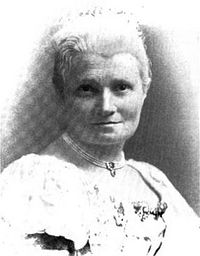

Flora Annie Steel (2 April 1847 to 12 April 1929) was an English writer, who lived in British India for 22 years. She was noted especially for books set or otherwise connected with the sub-continent.

Source: Wikipedia
Flora Annie Steel Wikipedia